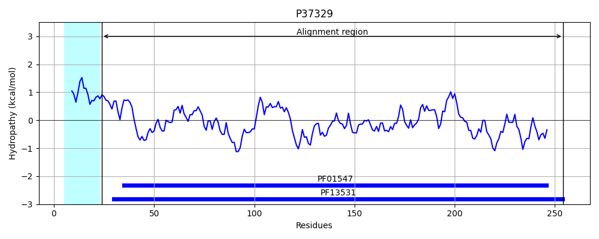

Hit Accession: P37329
Hit TCID: 3.A.1.8.1
Hit Description: gnl|BL_ORD_ID|10093 gnl|TC-DB|P37329|3.A.1.8.1 Molybdate-binding periplasmic protein precursor - Escherichia coli.
Mach Len: 239
e:0.000000
Query TMS Count : 1
Hit TMS Count: 1
TMS-Overlap Score: 0.350000
Predicted Substrates:CHEBI:6967;molybdate
BLAST Alignment:
Score: 278 , Bit scores: 111 bits, E-value: 1.2e-29, Alignment length: 239, Percentage identity: 36
Query: 34 ADNGKKQEIQVAAAASLTDVTKKLASEFKKEHKNADIKFNYGGSGALRKQIESGAPVDVFMSANTKDVDALKDKNKAHDT---YKYAKNSLVLIGDKDS--------NYTSVKDLKDNDKLALGEVKTVPAGKYAKQYLDNNNLFKEVESKIVYAKDVKQVLNYVEKGNAKQGFVYKTDLYKQNKKIDTVKVIKEVELKK---PITYEAGATSDSKLAKEWMEFLKSDKAKEILKEYHF 258
AD GK I V AAASLT+ + +A++FKKE K D+ ++ S L +QIE+GAP D+F+SA+ K +D DK KA DT NSLV++ K S + T+ L + +LA+G+ + VPAG YAK+ L + + K+ A+DV+ L VE+ A G VY +D +K + V E KK P+ G ++ K + ++LK +A EI K Y F
Sbjct: 24 ADEGK---ITVFAAASLTNAMQDIATQFKKE-KGVDVVSSFASSSTLARQIEAGAPADLFISADQKWMDYAVDK-KAIDTATRQTLLGNSLVVVAPKASVQKDFTIDSKTNWTSLLNGGRLAVGDPEHVPAGIYAKEALQKLGAWDTLSPKLAPAEDVRGALALVERNEAPLGIVYGSDAV-ASKGVKVVATFPEDSHKKVEYPVAVVEG--HNNATVKAFYDYLKGPQAAEIFKRYGF 254 | Protein Hydropathy Plots: |
|---|
|  |
Pairwise Alignment-Hydropathy Plot:
|
|---|
 |